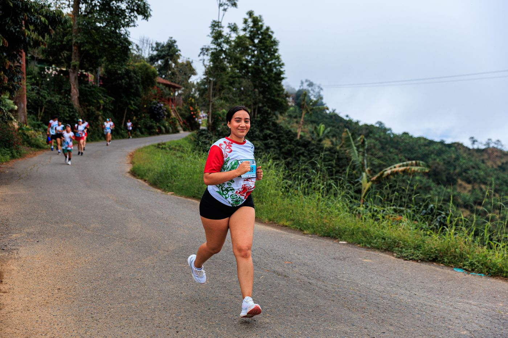
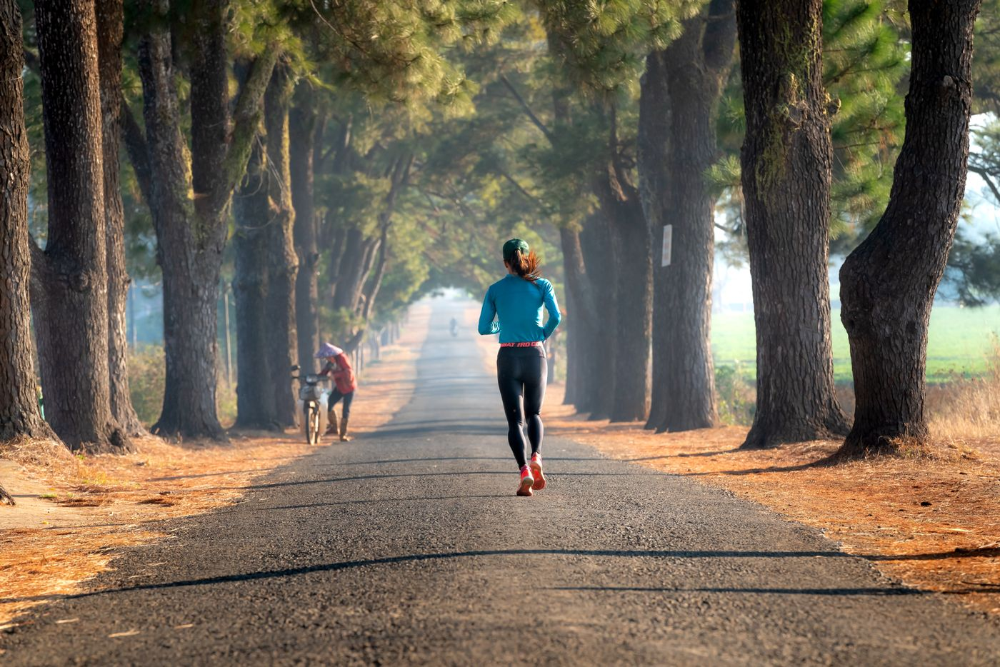

Maak de stad
van jou.
Een andere afslag kan al genoeg zijn.
Bekijk de City Run Edit

Kleding die met je dag meegaat.
Een lichte laag, een vrije pas en een route waar je zin in hebt. De City Run Edit begint bij bewegen zoals jij dat prettig vindt.

Geen vaste finish
Kies een rondje dat past bij hoe je dag voelt.
Tot buiten.
Bekijk de City Run Edit